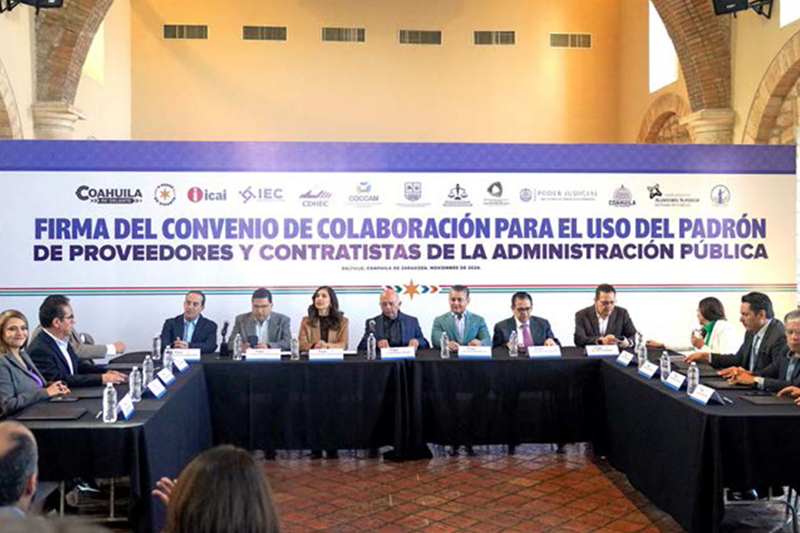
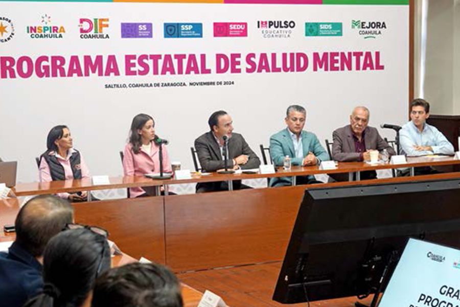

Informamos sobre las acciones de la Presidencia del Tribunal, que en coordinación con los diferentes órganos jurisdiccionales, fortalecen el quehacer judicial
La transformación del Poder Judicial de Coahuila implica fortalecer la cooperación interinstitucional. En un marco de respeto, es fundamental que trabajemos de la mano con los poderes y órdenes de gobierno, las instituciones públicas, la sociedad civil y foros profesionales y académicos, para diseñar e implementar políticas públicas que promuevan una justicia más humana, cercana, inclusiva y accesible.
Bajo esa tesitura, en este apartado informamos sobre las actividades desarrolladas por la Presidencia del Tribunal Superior de Justicia, y las alianzas estratégicas con diversas instituciones para realizar nuestra encomienda constitucional, bajo un estándar de calidad que supere las expectativas de eficiencia, transparencia y confianza de la ciudadanía.
Mantenemos nuestro compromiso de seguir construyendo un sistema judicial acorde a las necesidades de nuestro tiempo, esto no solo implica un enfoque renovado en los órganos jurisdiccionales, sino también un trabajo constante en los procesos administrativos y no jurisdiccionales, fundamentales para garantizar que los servicios que ofrecemos sean rápidos y eficaces.
Por esa razón, a través del Consejo de la Judicatura, buscamos que todas nuestras funciones estén alienadas con un único propósito: construir una justicia que no solo resuelva conflictos, sino que lo haga con calidez, independencia e imparcialidad de las y los funcionarios públicos de este Poder Judicial, garantizando que todas y todos los coahuilenses tengan la certeza de que el sistema judicial está de su lado, actuando con transparencia y profesionalismo.
Participación en el Sistema Estatal Anticorrupción
La prevención, detección, sanción y erradicación de los actos de corrupción, son guías de acción fundamentales en el Modelo de Justicia de Coahuila, a fin de brindar un sistema de impartición de justicia de calidad, eficiente, abierto y transparente. Por esta razón formamos parte del Comité Coordinador del Sistema Estatal Anticorrupción, y durante este periodo asistimos a 10 sesiones ordinarias y una extraordinaria, mientras que del órgano de gobierno participamos en cuatro sesiones ordinarias y una sesión extraordinaria.
En este marco, el Consejo de la Judicatura aprobó un Código de Ética y Conducta que fue firmado por el 100 por ciento de las personas servidoras públicas que trabajan en esta institución, asumiendo el compromiso de actuar con apego a los principios y normas que dicta; esta carta compromiso de cumplimiento es ahora un requisito previo a la incorporación a este poder público.
Aunado a esto, conformamos un Comité de Ética, con representación plural del ámbito jurisdiccional, no jurisdiccional y administrativo.
Participación en la Mesa de Coordinación para la Construcción de la Paz
La prioridad del Gobierno del Estado es la seguridad, en ese sentido, a invitación del Poder Ejecutivo participamos en las Mesas de Coordinación para la Paz y la Seguridad, donde se tratan de manera puntual los temas más delicados y de alto impacto, para que desde la visión de las y los juzgadores aportemos lo que nos corresponde para la prevención del delito en nuestro estado.
En ese sentido, este poder público participó en 223 reuniones donde, en coordinación con las diferentes instancias y órdenes de gobierno, diseñamos y trabajamos las estrategias de seguridad y procuración de justicia que nos permitan avanzar hacia resultados encaminados a la paz social, tranquilidad y bienestar de las familias coahuilenses.
Pleno del Tribunal Superior de Justicia
En el Pleno del Tribunal Superior de Justicia, máxima autoridad jurisdiccional dentro del Poder Judicial del Estado de Coahuila, realizamos, en tiempo y forma, las acciones y actividades que mandatan las diversas disposiciones normativas que regulan nuestra labor.
Durante este año judicial celebramos 47 sesiones públicas ordinarias y dos de carácter extraordinario; derivado de ello, emitimos 191 acuerdos con el propósito de fortalecer el acceso pronto y expedito a la justicia de las personas usuarias, y el funcionamiento de los órganos jurisdiccionales y las áreas administrativas. Asimismo, en cumplimiento a nuestras atribuciones, este año aprobamos la relación de 30 auxiliares de la administración de justicia en diversas materias, y admitimos a trámite ocho procedimientos judiciales para obtener la patente de notario. Además, integramos y atendimos 192 expedientes auxiliares, en donde fueron emitidos mil 995 acuerdos de la Presidencia del Tribunal Superior de Justicia del Estado de Coahuila de Zaragoza.
En cuanto a la actividad jurisdiccional de este Pleno, resolvimos un recurso de apelación, seis juicios de nulidad, dos recursos de queja, 18 juicios de amparo y atendimos cuatro procedimientos administrativos disciplinarios.
Respecto a la impartición de justicia a través de mecanismos que permitan vigilar que las leyes y actos de autoridad se apeguen a la Constitución, en el Pleno del Tribunal Superior de Justicia, en su carácter de Tribunal Constitucional, celebramos dos sesiones ordinarias en las que emitimos cuatro acuerdos.
Asimismo, atendimos dos acciones de inconstitucionalidad, una cuestión de inconstitucionalidad, y durante el periodo que se informa, emitimos un total de 15 acuerdos.
Labores desarrolladas por la Secretaría General de Acuerdos del Pleno del Tribunal Superior de Justicia
La Secretaría General de Acuerdos del Pleno es el órgano interno de apoyo y ejecución de la Presidencia y el Pleno de magistradas y magistrados del Tribunal Superior de Justicia, por lo cual su vinculación es permanente con el desarrollo de las actividades y acciones que permiten realizar con eficacia y prontitud trámites y servicios relacionados con la actividad jurisdiccional.
Durante el año que se informa, en el marco de nuestras atribuciones, dimos trámite a mil 232 exhortos, 10 cartas rogatorias, 65 incompetencias y 24 legalizaciones de firmas. Adicionalmente, atendimos dos procesos administrativos disciplinarios, y realizamos ocho notificaciones internas y 36 notificaciones externas.
De igual manera, en el presente ejercicio elaboramos 540 constancias a las y los solicitantes, correspondientes al registro del título de profesionales del derecho, para su acreditación ante los juzgados y salas del Tribunal, para que puedan ejercer como litigantes en esta institución, y emitimos 19 constancias adicionales de título.
Consejo de la Judicatura
En el Consejo de la Judicatura, en cumplimiento de nuestra responsabilidad de velar por la administración, vigilancia y disciplina del Poder Judicial, consolidamos durante 2024 avances significativos en el respeto a los derechos humanos y el acceso a una justicia pronta, expedita, humana y accesible a la ciudadanía coahuilense.
En concordancia con nuestro deber, el Pleno del Consejo de la Judicatura ha tomado acuerdos que permiten alcanzar beneficios en los procesos judiciales, y con ello una mayor cercanía entre el Poder Judicial y la ciudadanía, fortaleciendo la independencia, transparencia y eficiencia del sistema judicial.
1. Rubro de Administración
A lo largo de este año, por medio del Consejo impulsamos diversas medidas para la mejora en la impartición de justicia, mismas que, mediante los acuerdos generales emitidos, permiten mejorar el funcionamiento de los órganos que integran este poder público.
Durante 2024, emitimos 170 acuerdos en diversos rubros, de los cuales destacan los siguientes:
Tabla 22. Acuerdos en diversos rubros en los ejes de trabajo del Poder Judicial
| Fecha | Acuerdo | Objetivo |
|---|---|---|
| 15 de enero de 2024 | Acuerdo del Consejero Presidente ratificado por el Pleno del Consejo de la Judicatura en acuerdo C-006/2024, en sesión celebrada el 31 de enero de 2024 | Aprobamos la reforma al Reglamento de la Visitaduría Judicial General para incluir a la figura de Inspector Administrativo como elemento clave en la labor de la Visitaduría, para la revisión de aspectos administrativos y de órganos no jurisdiccionales |
| 24 de enero de 2024 | Acuerdo C-002/2024 | Mantenemos la tarifa de copias simples como lo preveía la Ley de Hacienda del Estado de Coahuila de Zaragoza de 2019, se decide seguir absorbiendo el 22.5 por ciento del costo de las copias simples y certificadas que se expiden en los órganos jurisdiccionales |
| 24 de enero de 2024 | Acuerdo C-003/2024 | Determinamos la gratuidad de la consulta de expedientes en el Archivo General Judicial, archivos regionales y únicos del Poder Judicial del Estado de Coahuila de Zaragoza |
| 31 de enero de 2024 | Acuerdo C-021/2024 | Autorizamos la transferencia al Archivo Histórico del Archivo General de dos documentos jurisdiccionales que contienen valores secundarios históricos. Asimismo, autorizamos la publicación de dos documentos jurisdiccionales en la edición Joyas Documentales de los Poderes Judiciales de la Comisión Nacional de Tribunales Superiores de Justicia de los Estados Unidos Mexicanos |
| 06 de febrero de 2024 | Acuerdo del Consejero Presidente ratificado por el Pleno del Consejo de la Judicatura en acuerdo C-027/2024, en sesión celebrada el 28 de febrero de 2024 | Autorizamos la especialización en materia de ejecución penal, para las personas juzgadoras de primera instancia en materia penal del Sistema Acusatorio y Oral en el Estado de Coahuila de Zaragoza. |
| 13 de febrero de 2024 | Acuerdo del Consejero Presidente ratificado por el Pleno del Consejo de la Judicatura en acuerdo C-027-D/2024, en sesión celebrada el 28 de febrero de 2024. | Aprobamos eximir el pago de derechos sobre preparación en materia de mediación y certificación de mediación al personal del Poder Judicial |
| 29 de febrero de 2024 | Acuerdo del Consejero Presidente ratificado por el Pleno del Consejo de la Judicatura en acuerdo C-042-B/2024, en sesión celebrada el 20 de marzo de 2024 | Modificamos la competencia por cuantía de los juzgados de primera instancia en materia civil con especialización hipotecaria del Poder Judicial |
| 29 de mayo de 2024 | Acuerdo C-076/2024 | Aprobamos el Código de Ética y Conducta para las Personas Servidoras Públicas del Poder Judicial del Estado de Coahuila de Zaragoza. |
| 29 de mayo de 2024 | Acuerdo C-077/2024 | Aprobamos el Proyecto de Valoración Documental para la creación del Catálogo de Disposición Documental |
| 04 de julio de 2024 | Acuerdo del Consejero Presidente ratificado por el Pleno del Consejo de la Judicatura en acuerdo C-111-A/2024, en sesión celebrada el 4 de julio de 2024 | Implementamos el Buzón de Anexos del Poder Judicial del Estado de Coahuila de Zaragoza, en juzgados letrados y mercantiles del Distrito Judicial de Saltillo |
| 17 de julio de 2024 | Acuerdo C-109/2024 | Aprobamos la reforma al Reglamento Interior del Observatorio Judicial del Poder Judicial, con el objeto de ampliar las funciones de sus integrantes para recopilar información que haga posible evaluar el desempeño de los órganos jurisdiccionales y no jurisdiccionales de este poder público |
| 11 de septiembre de 2024 | Acuerdo C-137/2024 | Autorizamos la transferencia al Archivo Histórico de 10 documentos jurisdiccionales, y se aprobó la exposición documental de seis de ellos en la Feria Internacional del Libro Coahuila 2024 |
| 30 de octubre de 2024 | Acuerdo C-167/2024 | Aprobamos la incorporación del Poder Judicial del Estado de Coahuila de Zaragoza al Registro Nacional de Obligaciones Alimentarias, y autorizamos la migración de la información concentrada en el Registro Estatal de Deudores Alimentarios Morosos. |
| 30 de octubre de 2024 | Acuerdo C-169/2024 | Aprobamos el procedimiento de Baja Documental de documentos de comprobación administrativa inmediata de los órganos del Poder Judicial, con la finalidad de liberar espacios y optimizar el funcionamiento de los archivos del Poder Judicial |
| 28 de noviembre de 2024 | Acuerdo C-183/2024 | Aprobamos los criterios de actuación entre los Juzgados de Primera Instancia en Materia Familiar y las personas Juzgadoras de Primera Instancia Especializadas en Violencia Familiar contra la Mujer de Competencia Mixta del Poder Judicial del Estado de Coahuila de Zaragoza, y los Centros de Atención e Integración Familiar del Sistema para el Desarrollo Integral de la Familia y Protección de Derechos del Estado de Coahuila de Zaragoza (CAIF) |
| 28 de noviembre de 2024 | Acuerdo C-184/2024 | Aprobamos que el Tribunal Distrital de Saltillo celebre sus audiencias en el edificio del Centro de Justicia Penal de Saltillo |
| 17 de diciembre de 2024 | Acuerdo C-219/2024 | Se formaliza el mecanismo de audiencias concentradas y audiencias programadas en bloque, que sirve para agilizar el trabajo en los Juzgados de Primera Instancia en Materia Penal del Sistema Acusatorio y Oral del Distrito Judicial del Estado de Coahuila de Zaragoza |
Fuente: Secretaría General de Acuerdos del Consejo de la Judicatura del Estado de Coahuila de Zaragoza. 2024.
2. Rubro de vigilancia, acciones desarrolladas por la Visitaduría Judicial General
La función de vigilancia dentro del Poder Judicial de Coahuila es elemental para garantizar la efectividad de la institución, pues permite que las y los servidores públicos cumplan, en tiempo y forma, con las acciones y actividades que tienen encomendadas, y apegadas al Modelo de Justicia de Coahuila.
Es por ello que la Visitaduría Judicial General inspecciona y supervisa el trabajo de las y los servidores públicos que laboran en los órganos jurisdiccionales y de apoyo a la función jurisdiccional en la entidad, para prevenir actos de corrupción, retraso en el desahogo de los procesos y la comisión de faltas administrativas, lo cual en conjunto, contribuye a generar confianza de la ciudadanía en la institución.
En ese sentido, con la finalidad de reforzar las labores de la Visitaduría Judicial General, así como acrecentar el recurso humano que integra dicho órgano, el Consejo de la Judicatura aprobó incorporar la figura de Inspector Administrativo, el cual se enfoca en las tareas de vigilancia y propuestas de mejora en aspectos administrativos de los órganos no jurisdiccionales.
Durante el 2024 realizamos dos jornadas de visitas e inspecciones ordinarias, durante los meses de marzo a mayo y septiembre a noviembre, con el propósito de realizar vigilancia judicial, actos de entrega-recepción, y ser un apoyo para la determinación de reelección de juzgadores. Asimismo, realizamos visitas judiciales extraordinarias y ejercicios de revisión interjornadas durante los meses de junio a agosto. Esto se traduce en 140 visitas judiciales ordinarias; cuatro visitas judiciales extraordinarias; cinco visitas especiales por reelección de persona juzgadora y cinco visitas para elaboración de acta de entrega-recepción, así como 54 visitas de inspección administrativa.
Este año, además de los órganos jurisdiccionales que visitamos, realizamos inspecciones en el Centro de Medios Alternos y de Solución de Controversias, el Centro de Evaluación Psicosocial, el Instituto Estatal de Defensoría Pública, el Archivo Judicial General, las Centrales de Actuarios y las Oficialías de Partes.
Durante estas jornadas de inspección, las y los visitadores entrevistaron al personal respecto del trabajo que realizan, de acuerdo a la asignación del titular del órgano jurisdiccional o de apoyo a la función jurisdiccional visitado. En estas se recibieron 94 quejas y observaciones por parte de personas usuarias y litigantes.


Igualmente, realizamos más de mil 600 revisiones a libros físicos y electrónicos, analizamos más de 2 mil 600 expedientes y causas, así como cerca de 400 documentos, entre dictámenes e informes de psicología y trabajo social, expedientes de mediación, boletas de notificación y remesas de expedientes enviados al Archivo Judicial, todo ello para verificar posibles anomalías y dar cuenta oportunamente tanto al titular de cada área como al Consejo de la Judicatura para su debido seguimiento.
3. Rubro de disciplina
El Consejo de la Judicatura, como órgano encargado de velar por la ética, integridad y disciplina del personal que integra los diversos órganos del Poder Judicial, ha mantenido una constante vigilancia del desempeño de servidores judiciales durante el ejercicio 2024.
Las acciones, medidas y resultados alcanzados en el ámbito disciplinario a lo largo de este año, han reforzado la confianza pública y la transparencia en la impartición de justicia.
En este rubro, durante el periodo que se informa, recibimos 221 denuncias o quejas planteadas por las personas justiciables.
Asimismo, resolvimos un total de 266 expedientes administrativos y emitimos 281 resoluciones, mismas que se instruyeron a diversas personas servidoras públicas.
La labor de disciplina por parte del Consejo de la Judicatura, garantiza a las y los justiciables que las personas servidoras públicas desempeñen sus funciones con honradez y profesionalismo, ya que, al atender las faltas cometidas por los mismos y sancionar conforme lo dispuesto en la ley, es posible combatir la negligencia de personas al servicio de la justicia que pueden afectar la función jurisdiccional, velando siempre por garantizar el buen desempeño del personal que labora en esta institución.
Tabla 23. Expedientes administrativos y auxiliares resueltos
| Actividad | 2024 |
|---|---|
| Inicio de procedimientos en contra de dos o más personas servidoras públicas. | 49 |
| No inicio de procedimiento | 25 |
| Improcedentes | 140 |
| Sin materia | 34 |
| Falta de competencia | 4 |
| Prescripción | 2 |
| Se desecha el escrito de queja | 2 |
| Total | 256 |
Fuente: Consejo de la Judicatura del Estado de Coahuila de Zaragoza. 2024.
Tabla 24. Sanciones impuestas por el Consejo de la Judicatura
| Actividad | 2024 |
|---|---|
| Sentencias | 24 |
| Apercibimientos | 2 |
| Amonestaciones | 2 |
| Suspensiones | 1 |
| Destituciones | 3 |
| Absolutorias | 16 |
| Total | 48 |
Fuente: Consejo de la Judicatura del Estado de Coahuila de Zaragoza. 2024.
Tabla 25. Expedientes administrativos atendidos
| Actividad | 2024 |
|---|---|
| Expedientes en trámite | 106 |
| Expedientes en estado de investigación | 96 |
| Expedientes pendientes de emitir acuerdo de inicio, no inicio, o en su caso improcedencia. | 2 |
| Expedientes pendientes para dictar sentencia definitiva. | 8 |
| Total | 212 |
Fuente: Consejo de la Judicatura del Estado de Coahuila de Zaragoza. 2024.
3.1 Expedientes auxiliares disciplinarios
En este año 2024 radicamos 11 expedientes auxiliares, de los cuales solo uno se encuentra actualmente en trámite.
3.2 Atención a juicios de amparo en asuntos disciplinarios
En lo que respecta a la atención y tramitación de los juicios de amparo en los que el Consejo de la Judicatura fue señalado como autoridad responsable, en la actualidad se tienen 42 asuntos: 18 corresponden a juicios iniciados en el 2024; 13, al 2023; ocho, al 2022; dos, al año 2021, y uno, al año 2019.
Vinculación Interinstitucional
Generar sinergias para la coordinación, colaboración y cooperación con instituciones públicas y privadas en el ámbito federal, estatal y municipal, además de instituciones y organizaciones de las sociedad civil, es fundamental para consolidar un sistema de justicia que responda efectivamente a las necesidades y expectativas de las y los justiciables, así como para contribuir al fortalecimiento del Estado de Derecho y la paz social.
Asimismo, reafirmamos nuestra disposición para trabajar de manera conjunta con el Poder Ejecutivo y el Poder Legislativo, impulsando reformas que respondan a la realidad que vive nuestra sociedad y sus necesidades. Nuestro enfoque es siempre garantizar que estas reformas no solo sean normativas, sino que se traduzcan en acciones tangibles que mejoren el acceso a la justicia de la sociedad coahuilense, especialmente de aquellos en situaciones de vulnerabilidad.
Gracias a la suscripción de alianzas estratégicas y convenios de colaboración, fomentamos una cultura de respeto hacia los derechos humanos; cimentamos las bases de un estado donde cada persona tenga acceso a la justicia sin distinción alguna; promovemos una cultura de paz y la resolución pacífica de sus conflictos; impulsamos un modelo de justicia abierta con perspectiva de género; fomentamos y consolidamos la justicia alternativa al interior del Estado; intercambiamos buenas prácticas para el fortalecimiento de otros tribunales de justicia; y nos permite capacitar, actualizar y especializar a nuestros servidores públicos para brindar una administración de justicia más profesional y eficiente.
En este 2024, suscribimos con la Secretaría de Finanzas y la Secretaría de Fiscalización y Rendición de Cuentas del Gobierno del Estado, el Convenio de Colaboración para el uso del padrón de proveedores y contratistas de la administración pública del Gobierno del Estado de Coahuila, para que, al realizar los procesos de contratación, se celebren exclusivamente con los proveedores y contratistas que cuenten con el certificado de aptitud, emitido por la Secretaría de Fiscalización y Rendición de Cuentas, el cual al estar homologado, permite encontrar y elegir proveedores confiables y legalmente establecidos, con servicios o productos de calidad.

Participación en la Comisión Nacional de Tribunales Superiores de Justicia de los Estados Unidos Mexicanos, y en la Unidad de Derechos Humanos e Igualdad de Género
La Comisión Nacional de Tribunales Superiores de Justicia de los Estados Unidos Mexicanos (CONATRIB), conformada por los 32 Tribunales Superiores de Justicia, es un espacio para fomentar y fortalecer los vínculos de colaboración entre cada estado de la República, promoviendo las mejores prácticas de administración de justicia.
Trabajamos coordinadamente en la modernización, innovación y cooperación de la administración de la justicia, por ello, además de nuestra asistencia a las cuatro Asambleas Plenarias de la CONATRIB, participamos en el Segundo Encuentro de la Red Nacional de Archivos y fuimos sede de la Reunión Nacional de Unidades de Gestión Tecnológica de Tribunales.
Durante el mes de junio fuimos anfitriones de la Segunda Asamblea Plenaria Ordinaria, realizada en Parras de la Fuente, en la que se abordaron temas relacionados al Fondo Nacional de Fortalecimiento de la Justicia Local, la implementación del Código Nacional de Procedimientos Civiles y Familiares, y la Ley General de Mecanismos Alternativos de Solución de Controversias.
En ese tenor, a través de la Unidad de Derechos Humanos e Igualdad de Género de la CONATRIB, que preside el Magistrado Miguel Felipe Mery Ayup, trabajamos con el Instituto Nacional de las Mujeres en la elaboración de una Guía Técnica para la emisión y seguimiento de Órdenes de Protección, para fortalecer los mecanismos de protección judicial para las mujeres que sufren violencia, y establecer lineamientos para la emisión y seguimiento de las órdenes de protección de naturaleza jurisdiccional.

También participamos en el Programa Integral para Prevenir, Atender, Sancionar y Erradicar la Violencia contra las Mujeres (PIPASEVM), que está dirigido a abordar las causas que originan la violencia por razones de género, con el objetivo de disminuirlas y contribuir al aumento de los niveles de bienestar de las mujeres y niñas en todo México.
Con el fin de expandir los conocimientos y las buenas prácticas desde las Unidades de Derechos Humanos e Igualdad de Género de todos los poderes judiciales locales, tuvimos el Ciclo de Conferencias Género y Justicia, en las cuales contamos con las ponencias de Sol Purita, coordinadora de Proyecto Género en el Sistema de Justicia Penal (CICAD) de la OEA; Wendy Figueroa, directora de la Red Nacional de Refugios; Diana Murrieta, presidenta y fundadora de Nosotras para ellas, y Evelyn Trasviña, de BANAVIM, en la que logramos contar con la participación de todas las unidades de los tribunales locales y de las áreas jurisdiccionales.
En colaboración con la Red Nacional de Mecanismos Alternativos de Solución de Controversias (MASC) de la CONATRIB, implementamos una capacitación a nivel nacional con el propósito de contribuir en la transversalización de la perspectiva de género a las personas mediadoras de toda la República. En el mes de noviembre capacitamos al primer grupo compuesto por personal de Ciudad de México, Nayarit, Oaxaca, Sonora, Veracruz y Yucatán, y continuaremos en el 2025 con el resto de las entidades federativas.
Finalmente, realizamos el Tercer Intercambio de Experiencias de las Unidades de Género: Políticas Judiciales de Inclusión y Enfoque Diferenciado para todas las Personas. El objetivo del encuentro fue desarrollar metodologías y herramientas para la aplicación de buenas prácticas identificadas para la transversalización del enfoque de igualdad de género, interseccionalidad e inclusión social a nivel institucional en los poderes judiciales, impulsadas por las Unidades, Comisiones y Direcciones de Género de las 32 entidades federativas de la República Mexicana.
Actividades de la Presidencia del Tribunal Superior de Justicia
La Ley Orgánica de este poder público establece las facultades del Presidente del Tribunal Superior de Justicia del Estado, y en ese sentido el Magistrado Miguel Felipe Mery Ayup desarrolló las siguientes actividades:
Tabla 26. Actividades sostenidas por el titular de la Presidencia del Tribunal Superior de Justicia del Estado
| Reuniones, eventos y recorridos |
|---|
| Asistencia a la Sesión solemne de Instalación de la LXIII Legislatura del Congreso del Estado. |
| Entrega de Patrullas y Reconocimientos a Elementos de Policías del Municipio de Torreón. |
| Reunión de trabajo con integrantes del Poder Judicial de Baja California, sobre el Modelo de Juzgado Especializado en Violencia Familiar contra la Mujer, Poder en Línea, Justicia Abierta y la Gestión del Sistema Penal en Coahuila. |
| Reunión de trabajo con Mayra Valdés González, Secretaria de las Mujeres y personal del Poder Judicial. |
| Reunión de trabajo con Cecilia de la Garza Martínez, Directora General de la Oficina Inspira Coahuila. |
| Asistencia a la Mesa de Coordinación de Acciones que garanticen la tranquilidad y la paz de las y los coahuilenses. |
| Firma de convenio de colaboración “8 de 8 contra la violencia de género” con el Instituto Electoral de Coahuila. |
| Reunión de trabajo con Esther Quintana, Secretaria de Cultura en el Estado. |
| Reunión de seguimiento con personal jurisdiccional, no jurisdiccional y administrativo del Distrito Judicial de Torreón. |
| Reunión de trabajo virtual con integrantes de la Comisión Nacional de Tribunales Superiores de Justicia (CONATRIB). |
| Reunión de trabajo con Eliud Felipe Aguirre Vázquez, Secretario de Salud en el Estado. |
| Reunión de trabajo con Óscar Pimentel González, Secretario de Gobierno del Estado. |
| Entrega de Certificaciones en Mediación y Conciliación a elementos de la Unidad de Justicia Cívica Municipal. |
| Instalación del Consejo Estatal de Salud Mental y Adicciones. |
| Reunión de trabajo con Roberto Piña Amaya, Alcalde del municipio de Frontera. |
| Recibe el informe de Actividades 2023 del Instituto Coahuilense de Acceso a la Información Pública (ICAI). |
| Reunión de trabajo con la Comisión encargada de la Implementación del Nuevo Código Nacional de Procedimientos Civiles y Familiares. |
| Asistencia a la toma de protesta de Octavio Pimentel como Rector de la Universidad Autónoma de Coahuila (UAdeC). |
| Reunión de trabajo con la Presidenta Honoraria del DIF Coahuila, Liliana Salinas, y la Procuradora de Niños, Niñas y la Familia, María Teresa Araiza. |
| Reunión de trabajo con la Mesa Directiva de la Asociación de Licenciadas en Derecho. |
| Se recibe, en la Sesión Ordinaria del Pleno, a los alumnos de Segundo Semestre de la Licenciatura en Derecho de la Universidad La Salle. |
| Reunión de trabajo con el Colegio de Notarios sobre el Nuevo Código Nacional de Procedimientos Civiles y Familiares. |
| Acompaña al Gobernador del Estado, Manolo Jiménez Salinas, al arranque de Construcción de Arcos de Seguridad Carreteros en el municipio de Ramos Arizpe. |
| Asistencia a la Segunda Sesión Ordinaria del Comité Coordinador del Sistema Estatal Anticorrupción de Coahuila. |
| Acompaña al Gobernador del Estado, Manolo Jiménez Salinas, a la Instalación del Consejo para el Combate Ciudadano de Incendios Forestales. |
| Acompaña al Gobernador del Estado, Manolo Jiménez Salinas, a la firma del Pacto Laboral Coahuila 2024 “Nuevos Retos Laborales para un Coahuila Global”. |
| Asistencia a la Sesión Solemne del Congreso del Estado de Coahuila, con motivo de la celebración del 111 Aniversario del Día del Ejército. |
| Asistencia a la Presentación del Modelo de Fortalecimiento de Seguridad Coahuila. |
| Acompaña al Gobernador del Estado, Manolo Jiménez Salinas, al arranque de la Construcción del Cuartel de la Policía Estatal en el municipio de Progreso. |
| Asistencia la ceremonia de izamiento de Bandera en el marco de la celebración del Día de la Bandera. |
| Asistenciaa la Instalación de la Comisión de Blindaje Electoral 2024. |
| Acompaña al Gobernador del Estado, Manolo Jiménez Salinas, al arranque de la Construcción del Cuartel de la Policía Estatal en el municipio de Hidalgo. |
| Participación en la Primera Asamblea Plenaria Ordinaria 2024, de la Comisión Nacional de Tribunales de Justicia de los Estados Unidos Mexicanos (CONATRIB), en el estado de Yucatán. |
| Rinde protesta como miembro de la mesa directiva, en su calidad de vicepresidente de la región noreste de la CONATRIB. |
| Participación como panelista en la presentación de “Las audiencias virtuales en México después de la pandemia”. |
| Acompaña al Gobernador del Estado, Manolo Jiménez Salinas, al arranque del Operativo de Combate a Incendios Forestales. |
| Reunión de trabajo con el Magistrado Eliseo Juan Hernández, Secretario Técnico de la Coordinación del Sistema de Justicia Civil y Familiar, sobre el Nuevo Código Nacional de Procedimientos Civiles y Familiares. |
| Arranque del Taller de Manejo de Audiencias con Lenguaje Ciudadano, impartido por USAID a jueces y juezas en materia penal en el Estado. |
| Acompaña al Gobernador del Estado, Manolo Jiménez Salinas, a la presentación de la Estrategia Integral para las Mujeres Coahuilenses. |
| Asistencia a la Mesa de Coordinación Estatal para la Construcción de Paz y Seguridad en el Estado. |
| Encabeza la Quinta Sesión del Consejo Académico del Instituto de Especialización Judicial, sobre la profesionalización de las y los que laboran en el Poder Judicial. |
| Inauguración del Segundo Encuentro de la Red de Archivos Judiciales. |
| Acompañ al Gobernador del Estado, Manolo Jiménez Salinas, al arranque de la Construcción del Cuartel de la Policía Estatal en el Municipio de Arteaga. |
| Inauguración del Diplomado sobre el Código Nacional de Procedimientos Civiles y Familiares, dirigido al personal que integra al Poder Judicial. |
| Acompaña al Gobernador del Estado, Manolo Jiménez Salinas, al evento Vive el Eclipse desde el Planetarium de Torreón. |
| Reunión de trabajo sobre el funcionamiento de los Juzgados Especializados en Violencia Contra la Mujer, con la asistencia de la titular de la Secretaría de la Mujeres y personal de los Centros de Empoderamiento de la Fiscalía General del Estado. |
| Inauguración del Diplomado Sistema Integral de Justicia Penal para Adolescentes dirigido a jueces, secretarios, defensores y mediadores del Poder Judicial. |
| Asistencia al Encuentro de Cooperación para el Fortalecimiento de la Estrategia de Búsqueda Forense de Personas Desaparecidas con Fines de Identificación Humana. |
| Presentación de la convocatoria “Magistrada y Magistrado por un día”. |
| Firma de convenio de colaboración entre la Secretaría de las Mujeres y la Comisión Estatal de Derechos Humanos, para promover e implementar la perspectiva de género en los procesos de cada institución. |
| Sesión del Pleno Infantil del Tribunal Superior de Justicia, el cual fue inaugurado por el Magistrado Presidente. |
| Asistencia a la conmemoración del Día Internacional del Trabajo. |
| Recibe la visita del Magistrado Raúl Mendoza Unzón, Presidente del Poder Judicial de Baja California Sur, para conocer los Juzgados Especializados en Violencia Familiar contra la Mujer. |
| Acompaña al Gobernador del Estado, Manolo Jiménez Salinas, en la Conmemoración del Bicentenario de la creación del Estado de Coahuila-Texas, y la apertura de la cápsula del tiempo “200 años, 200 historias”. |
| Reunión de trabajo con el Colegio de Notarios de Coahuila, Delegación Saltillo. |
| Acompaña al Gobernador del Estado, Manolo Jiménez Salinas, en la entrega de preseas al Mérito Magisterial por 30, 40 y 50 años de servicio. |
| Participación en la Mesa de Coordinación Estatal para la Construcción de Paz y Seguridad en el Estado. |
| ntercambio de buenas prácticas entre personal jurisdiccional y administrativo en materia penal con magistrados y personal del Poder Judicial del Estado de Zacatecas. |
| Inauguración de la Reunión Nacional de Unidades de Gestión Tecnológica. |
| Participación en la Mesa de Coordinación Estatal para la Construcción de Paz y Seguridad en el Estado. |
| Celebración de la Segunda Asamblea Plenaria Ordinaria de la Comisión Nacional de Tribunales Superiores de Justicia (CONATRIB). |
| Asistencia a la Instalación del Comité de Regulación, Supervisión y Seguimiento a los Centros Residenciales Especializados en Adicciones. |
| Asistencia a la Reunión Regional Noreste de Seguridad Pública, con la participación de los Gobernadores de Coahuila, Nuevo León y Tamaulipas. |
| Acompaña al Gobernador del Estado, Manolo Jiménez Salinas, a la presentación de la campaña “¡Sorpréndete con Coahuila!”. |
| Asistencia al desayuno conmemorativo del Día de la Abogada y del Abogado. |
| Asistencia a la inauguración del Encuentro con Unidades de Género del Gobierno del Estado. |
| Participación en el Diálogo Nacional sobre la Reforma Judicial. |
| Inauguración del Foro sobre el Delito de Acecho. |
| Asistenciaa la Develación de la Placa de la denominación “Barrio Mágico” al Ojo de Agua, y la actualización de nombramientos de Pueblos Mágicos de Coahuila. |
| Acompañ al Gobernador del Estado, Manolo Jiménez Salinas, en la presentación de la estrategia “Impulso Educativo”. |
| Asistencia a la Sesión Solemne del Congreso del Estado en donde se inscribieron en letras doradas: “Coahuila, 200 años de Grandeza”. |
| Recibe la visita de juezas, jueces y personal administrativo del Poder Judicial de Baja California, con la finalidad de intercambiar buenas prácticas en el Modelo de Juzgados Especializados en Violencia Familiar contra la Mujer. |
| Asistencia a la inauguración de las actividades de la Cátedra de Derechos Humanos Ministra Ana Margarita Ríos Farjat, de la Universidad Autónoma de Coahuila. |
| Participación en la Mesa de Coordinación Estatal para la Construcción de Paz y Seguridad en el Estado. |
| Acompaña al Gobernador del Estado, Manolo Jiménez Salinas, en el arranque de la campaña: “Septiembre, mes del testamento”. |
| Participación en la reunión del Consejo de Seguridad y Desarrollo Regional Laguna. |
| Recibe la visita de juezas y jueces del Poder Judicial de Chihuahua, con la finalidad de intercambiar buenas prácticas en el Modelo de Juzgados Especializados en Violencia Familiar contra la Mujer. |
| Asistencia a la Tercera Asamblea Plenaria Ordinaria de la Comisión Nacional de Tribunales Superiores de Justicia (CONATRIB). |
| Con la finalidad de intercambiar buenas prácticas en el Modelo de Juzgados Especializados en Violencia Familiar contra la Mujer, se recibió la visita de juezas y jueces del Poder Judicial de Veracruz. |
| Acompaña al Gobernador del Estado, Manolo Jiménez Salinas, en la inauguración de la Feria Internacional del Libro Coahuila 2024 (FIL Coahuila). |
| Asistencia a la Ceremonia del Grito de Independencia. |
| Acompaña al Gobernador del Estado, Manolo Jiménez Salinas, al desfile conmemorativo del 214 Aniversario del inicio de la Independencia de México. |
| Participación en la presentación de la Edición Conmemorativa de la Constitución Política del Estado de Coahuila y Texas de 1827. |
| Participaciónen la Mesa de Coordinación Estatal para la Construcción de Paz y Seguridad en el Estado. |
| Reunión de trabajo con los y las integrantes del Observatorio Ciudadano. |
| Participación en la reunión del Consejo de Seguridad y Desarrollo Regional Laguna. |
| Inauguración del Curso de Capacitación en Materia de Adicciones y Salud Mental, a personal operativo del Poder Judicial del Estado. |
| Inauguración del Diálogo de Justicia Penal con la asociación México Evalúa. |
| Acompaña al Gobernador del Estado, Manolo Jiménez Salinas, en el depósito de la Cápsula del Tiempo “200 años, 200 historias”. |
| Participació en la reunión del Consejo de Seguridad y Desarrollo Regional Laguna. |
| Reuniónde trabajo con Magistradas y Magistrados del Tribunal Superior de Justicia y Magistrados en retiro. |
| Recibe la visita de estudiantes de la carrera de Derecho de la Facultad de Jurisprudencia. |
| Asistenciaa la inauguración del evento “Tejiendo redes: networking y política”, en el marco de la conmemoración del 71 aniversario del voto de la mujer en México. |
| Testigo de honor de la firma del Convenio para el Establecimiento de Puntos Violetas en Saltillo. |
| Entrevista en Telediario sobre la Reforma Judicial. |
| Inauguración del taller dirigido al personal que labora en los Juzgados Especializados en Violencia Familiar contra la Mujer, en colaboración con ConJusticia, USAID México y Grupo de Acción DH. |
| Reunión de trabajo con personal del Tribunal Superior de Justicia del Estado, ConJusticia, USAID México y Acción DH. |
| Entrega de constancias a quienes cursaron el Diplomado de Justicia para Adolescentes. |
| Inauguración de la Segunda Jornada de Actualización a Juezas y Jueces en materia Penal en el Estado. |
| Asistencia a la Cuarta Asamblea Plenaria Ordinaria de la Comisión Nacional de Tribunales Superiores de Justicia (CONATRIB). |
| Acompaña al Gobernador Manolo Jiménez Salinas a la inauguración del Arco de Seguridad Carretero. |
| Asistencia a la inauguración de los Juzgados Cívicos Municipales de Saltillo. |
| Acompaña al Gobernador Manolo Jiménez Salinas al izamiento de bandera y desfile cívico militar en la ciudad de Piedras Negras. |
| Firma del convenio de colaboración para el uso del Padrón de proveedores y contratistas de la administración pública. |
| Acompaña al Gobernador Manolo Jiménez Salinas a la inauguración del Cuartel de la Policía Estatal en el municipio de Progreso. |
| Asistencia a la Sesión Solemne del Congreso del Estado, en donde se rinde el Primer Informe de Labores del Gobernador Constitucional del Estado de Coahuila de Zaragoza, Manolo Jiménez Salinas. |
| Asistencia al Primer Informe Ciudadano del Gobernador Constitucional del Estado de Coahuila de Zaragoza, Manolo Jiménez Salinas. |
| Participación en la Mesa de Coordinación Estatal para la Construcción de Paz y Seguridad en el Estado. |
| Capacitación a personal del Instituto Estatal de la Defensoría Pública en etapa intermedia y ejecución penal. |
| Participación en el Conversatorio Estatal sobre la Reforma Judicial en Coahuila, con el Secretario de Gobierno, Óscar Pimentel González. |
| Asistencia a la Sesión Solemne del H. Consejo Universitario de la Universidad Autónoma de Coahuila, en la que se entregan los títulos de “Doctor Honoris Causa” al doctor José Ramón Narro Robles y al licenciado José Fuentes García. |
| Participación en la XXXII Sesión Ordinaria del Consejo Estatal de Seguridad, encabezada por el Gobernador Constitucional del Estado, Manolo Jiménez Salinas. |
| Participació en el Seminario Judicial con la participación de Magistradas, Magistrados, Magistrados Distritales, juezas y jueces de todo el estado, y personal directivo del PJECZ. |
Fuente: Presidencia del Tribunal Superior de Justicia del Estado de Coahuila de Zaragoza. 2024.
Comisiones del Pleno del Tribunal Superior de Justicia
A fin de atender y dar seguimiento a asuntos relacionados con la mejora continua en la impartición de justicia, así como para llevar a cabo estudios especiales, organizar seminarios, conversatorios y actualización del personal que integra el Poder Judicial de Coahuila, continuamos con el trabajo desarrollado en las diferentes comisiones formadas al interior del Pleno.
De estas actividades se informa en los apartados siguientes:
1. Comisión de Implementación del Código Nacional de Procedimientos Civiles y Familiares
La adopción del Código Nacional de Procedimientos Civiles y Familiares representa un importante avance hacia la modernización de la justicia en estas materias. Este nuevo marco normativo busca estandarizar los procedimientos en todo el país, asegurando que los litigios se tramiten bajo principios de celeridad y eficiencia procesal, contribuyendo a un sistema de justicia más accesible y acorde con las necesidades contemporáneas.
En este contexto, a través de esta Comisión y del Instituto de Especialización Judicial, iniciamos con las acciones necesarias para la implementación y la óptima aplicación del Código y desarrollamos el programa académico del Diplomado del Código Nacional de Procedimientos Civiles y Familiares, para capacitar a las personas servidoras públicas de esta institución, con la finalidad de contribuir con el desarrollo de aptitudes necesarias y dotar de mayores herramientas en relación a la nueva legislación nacional.
La plantilla docente de este programa estuvo integrada por Magistradas y Magistrados de la Sala Colegiada Civil y Familiar y de la Sala Colegiada Penal, así como personal del Centro de Medios Alternos de Solución de Controversias, y de la Dirección de Innovación del Poder Judicial del Estado de Coahuila. Asimismo, se contó con la participación del Magistrado Marco Antonio Velasco Arredondo, Magistrado de la Primera Sala Civil del Tribunal Superior de Justicia de la Ciudad de México.
Así, en el mes de abril del año que se informa iniciamos con el Diplomado del Código Nacional de Procedimientos Civiles y Familiares, en los distintos Distritos Judiciales del Estado, donde participaron 324 personas servidoras públicas del Poder Judicial.
Durante el mes de octubre impartimos el Diplomado a abogadas y abogados litigantes registrados ante el Tribunal Superior de Justicia del Estado, personas servidoras públicas y profesionistas con Licenciatura en Derecho, contando con una participación de 401 personas.
Con este Diplomado fortalecimos las competencias profesionales indispensables para el idóneo desempeño de las personas operadoras del sistema civil y familiar, adaptándonos a las demandas sociales y comprometiéndonos a la implementación efectiva de estas reformas, ya que estos cambios legislativos son un paso importante para garantizar una impartición de justicia que responda a las necesidades actuales de todas las personas.
Finalmente, Magistradas y Magistrados integrantes de la Sala Colegiada Civil y Familiar, así como de la Sala Regional, participaron en el Congreso Nacional de Derecho Procesal "Justicia cotidiana en el CNPCyF, 2024", donde se llevaron a cabo diversas actividades para la discusión de las modificaciones reglamentarias desde una perspectiva interdisciplinaria.
2. Comisión de Igualdad de Género
En el transcurso del 2024, en la Comisión de Igualdad de Género, trabajamos con el objetivo de consolidar las estrategias y las líneas de acción que garanticen a las mujeres, sus hijas e hijos, una efectiva igualdad en el acceso a la justicia.
En correspondencia con el Poder Ejecutivo participamos también en diálogos celebrados con distintos colectivos, a fin de trazar rutas de trabajo y dar seguimiento a sus peticiones.
En el mes de agosto, la Magistrada María Luisa Valencia García participó en el Primer Encuentro de Profesionales de la Justicia protegiendo la libertad de expresión y la defensa de los Derechos Humanos (REDI-LEDH), que se realizó en la Ciudad de México.
En el marco del Día Internacional de la Eliminación de la Violencia contra la Mujer, la Magistrada María Eugenia Galindo Hernández participó en el evento “No más violencia 2024”, organizado por el Consulado Mexicano en Eagle Pass, Texas, Estados Unidos.
Aunado a lo anterior, la Magistrada María Luisa Valencia García participó en el XXVI Ciclo de Conferencias en Derecho Procesal Mexicano, donde expuso información relacionado a la violencia que se origina por acecho, a un año de que se tipificara el acecho como delito autónomo y diferenciado del acoso, en una iniciativa que en su momento fue impulsada por este poder.
Finalmente, el Magistrado Presidente Miguel Felipe Mery Ayup asistió a la Cátedra de Derechos Humanos Ministra Ana Margarita Ríos Farjat, que organizó la Defensoría de los Derechos Humanos Universitarios de la Universidad Autónoma de Coahuila.
Unidad Jurídica
A través de una gestión estratégica y profesional, en la Unidad Jurídica contribuimos al fortalecimiento del marco jurídico y operativo de esta casa de justicia, proporcionando asesoría legal integral, la adecuada formalización de relaciones contractuales, y el cumplimiento de la normativa en cuanto a los procesos de licitaciones públicas.
La defensa jurídica del Poder Judicial es una de las principales funciones de esta unidad, y en este ámbito, durante 2024, dimos atención a 102 expedientes de amparo. Estas gestiones incluyeron la participación en diversas etapas del procedimiento, como en la presentación de informes justificados, el seguimiento en audiencias y resoluciones, y la ejecución de resoluciones.
La atención a los expedientes de amparo permitió al Poder Judicial salvaguardar sus derechos e intereses, en un marco de respeto al Estado de Derecho y a las disposiciones legales aplicables.
En el ámbito contractual, en la Unidad Jurídica elaboramos, revisamos y formalizamos 77 contratos en diversas modalidades, garantizando la transparencia y claridad en las relaciones jurídicas del Poder Judicial. Entre los principales contratos gestionados se encuentran los contratos de arrendamiento, de servicios asimilados a salarios, y los convenios específicos de colaboración con otras instituciones.
En el ámbito laboral, atendimos 47 casos durante 2024, asegurando que las decisiones tomadas estuvieran en estricto apego a la normativa vigente, y que protegieran los derechos tanto del Poder Judicial como del personal involucrado. Las principales acciones realizadas incluyeron la representación en audiencias laborales y las negociaciones conciliatorias.